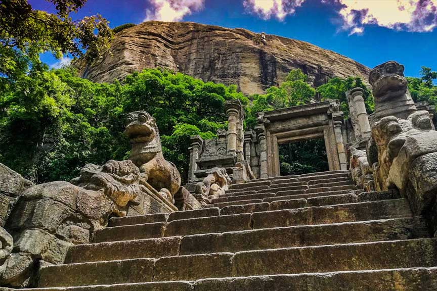

The Northern Province of Sri Lanka is rich in history, culture, and natural beauty. Known for its pristine beaches, ancient temples, and unique Tamil culture, this region offers a distinct experience from the rest of the island. Jaffna, the capital, is famous for its colonial architecture and vibrant local markets.
Top 5 Places to Visit
- Jaffna Fort - A 17th-century fort built by the Portuguese and later expanded by the Dutch.
- Nallur Kandaswamy Kovil - One of the most significant Hindu temples in Jaffna.
- Nagadeepa Purana Vihara - An ancient Buddhist temple located on Nainativu Island.
- Point Pedro - The northernmost point of Sri Lanka with beautiful beaches and lighthouses.
- Keerimalai Springs - Natural freshwater springs with historical and religious significance.
Top 5 Hotels
- Jetwing Jaffna - A modern hotel offering comfortable accommodations in the heart of Jaffna.
- The Thinnai - A boutique hotel showcasing traditional Jaffna architecture and hospitality.
- Heritage Hotel - Located near Jaffna Fort, offering convenient access to major attractions.
- Green Grass Hotel - A budget-friendly option with clean rooms and friendly service.
- Palm Garden Hotel - Set amidst lush gardens, providing a peaceful retreat in Jaffna.
Jaffna Fort
Explore this historic fort that showcases the colonial history of Northern Sri Lanka.
Nallur Kovil
Visit this magnificent Hindu temple known for its grand architecture and religious significance.

Point Pedro
Experience the northernmost point of Sri Lanka with its scenic beaches and lighthouses.
The North Western Province is known for its diverse attractions ranging from ancient Buddhist monasteries to beautiful coastal areas. It's home to the sacred city of Anuradhapura, the wildlife-rich Wilpattu National Park, and the picturesque coastal town of Kalpitiya, famous for dolphin watching and kitesurfing.
Top 5 Places to Visit
- Yapahuwa - An ancient rock fortress and former capital of Sri Lanka with stunning stone stairways and ruins.
- Wilpattu National Park - Sri Lanka's largest national park, known for its leopard population.
- Kalpitiya - A coastal paradise ideal for dolphin watching, kitesurfing, and beach activities.
- Chilaw - A coastal town famous for its lagoons, fishing culture, and Munneswaram Temple.
- Puttalam - A coastal town known for its salt production and lagoon ecosystem.
Top 5 Hotels
- Ulagalla Resort - A luxury eco-resort set in a 150-year-old mansion near Anuradhapura.
- Palm Garden Village - A beachfront resort in Kalpitiya offering water sports and relaxation.
- Heritage Hotel Anuradhapura - Located close to the ancient city, perfect for history enthusiasts.
- Wilpattu Safari Camp - An authentic camping experience near Wilpattu National Park.
- Dolphin Beach Resort - Situated in Kalpitiya, ideal for dolphin watching and beach activities.

Yapahuwa Rock Fortress
Discover the ancient rock fortress, once a royal capital, with stunning stone stairways and ruins.

Wilpattu National Park
Go on a safari to spot leopards, elephants, and diverse wildlife in their natural habitat.
Kalpitiya
Enjoy water sports, dolphin watching, and beautiful beaches in this coastal paradise.
Sabaragamuwa Province is renowned for its gem mines, lush rainforests, and breathtaking waterfalls. The province is home to Sinharaja Forest Reserve, a UNESCO World Heritage Site, and the sacred Adam's Peak, a pilgrimage site for multiple religions. The region also boasts numerous tea plantations and spice gardens.
Top 5 Places to Visit
- Adam's Peak (Sri Pada) - A sacred mountain and popular pilgrimage site with a distinctive footprint-shaped rock.
- Sinharaja Forest Reserve - A UNESCO World Heritage Site and biodiversity hotspot.
- Belihuloya - A scenic hill station known for its beautiful landscapes and adventure activities.
- Ratnapura - The "City of Gems," famous for its gem mines and gemological museums.
- Bopath Falls - A beautiful waterfall shaped like a Bo leaf, located near Ratnapura.
Top 5 Hotels
- Rainforest Edge - An eco-lodge located near Sinharaja Forest Reserve.
- Stafford Bungalow - A colonial-era bungalow offering luxury accommodations near Adam's Peak.
- Ratnapura Rest House - A historic hotel with views of the surrounding hills and gem mines.
- Belihuloya Hotel - A comfortable stay option in the picturesque hill station of Belihuloya.
- Gem River Resort - Located near Ratnapura, offering a peaceful retreat amidst nature.

Adam's Peak
Climb this sacred mountain for a spiritual experience and breathtaking sunrise views.
Sinharaja Forest
Explore this UNESCO World Heritage rainforest with its rich biodiversity and endemic species.
Ratnapura
Discover the "City of Gems" and learn about Sri Lanka's famous gem mining industry.